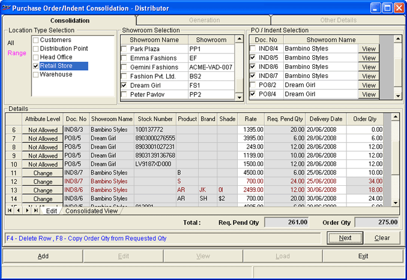

The Purchase Order/Indent Consolidation - Distributor window is as shown.

Location Type Selection: Click All to select all location types or Range to select specific locations. If you have clicked All, all location types are checked in the box to the right. If the selection is Range, none of the location types is checked. Click to select the relevant ones.
Showroom Selection: All showrooms that fall under the selected location types are displayed. Click the showroom names to choose the required ones.
PO / Indent Selection: Lists all open PO/ Indents raised by the selected showrooms. The list contains the Doc. No and Showroom Name for each PO/ Indent. Select the required Doc. No. Click View to see the details in the purchase order. Click here for a sample. Click Exit to close the view. Repeat for each document, if you want to check the item details in each document. The related details are displayed in the grid.
Details: This grid has two sheets, Edit and Consolidated View. The details of all selected PO/ Indent are displayed in the Edit sheet.
Attribute Level: The field value will display a button Not Allowed, if the indent/ purchase order from POS is stock number based. Modifications are allowed if the indent/ purchase order is based on some other item attribute, for example Product. Then a button Change is displayed. Click Change to modify the level of ordering.
Note: POS usually prepares a purchase request based on the items being sold at the showroom currently. However, there may be cases where analysis of past sale would lead to change of merchandise. For example, the styles or sizes which you continue to sell may change. Considering the new business decision, use this option to make adjustments in the purchase order.
Doc. No: The selected purchase order/ indent document number is displayed here.
Showroom Name: The name of the showroom that requested for purchase of the item is displayed here.
Stock Number/ Product/ Brand/ Shade: Displays the stock numbers in the open purchase order/indent. If PO/Indent contains information based on other attribute/s in the item master, the same shall be displayed. For example, if the PO is raised based on Product (Class1), Brand (Class2) and Style (Subclass1), all these values are displayed in consecutive columns.
Rate: The corresponding rate is displayed. Change, if required.
Req. Pend Qty: Remaining quantity to be ordered as per the purchase order/ indent is displayed.
Delivery Date: Delivery date in the purchase order/ indent is displayed. Change, if required. In case you have clicked Change to modify the item ordering level, the value entered in the Change Attribute window is displayed.
Order Qty: The quantity in the purchase order/ indent is displayed. Change, if required. Order quantity can be more than or less than the requested quantity. If the quantity is split across different combinations of the item attributes as part of changing the level of ordering, the total quantity is displayed.
In the Details grid, click Consolidated View to see the consolidated PO/ Indent, arranged item wise. Click here for a sample.
Total:
Req. Pend Qty: Total of the pending quantity as shown in the grid is displayed.
Order Qty: Total of the quantity to be ordered as shown in the grid is displayed.
F4: To delete the selected rows in the grid
F8: To copy order quantity from the requested quantity in the indent
{kind=link}
{kind=link}